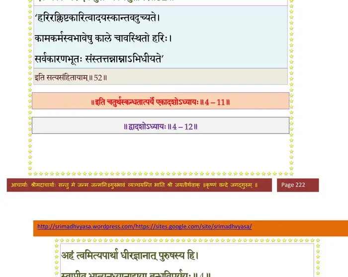

स्कन्ध 4 · अध्याय 11
श्लोक १
मैत्रेय उवाच–
प्रजापतेर्दुहितरं शिंशुमारस्य वै ध्रुवः ।
उपयेमे भ्रमिं नाम तत्सुतौ कल्पवत्सरौ।। १ ।।
प्रजापतेर्दुहितरं शिंशुमारस्य वै ध्रुवः ।
उपयेमे भ्रमिं नाम तत्सुतौ कल्पवत्सरौ।। १ ।।
श्लोक २
इलायामपि भार्यायां वायोः पुत्र्यां महाबलः ।
पुत्रमुत्कलनामानं योगेश्वरमजीजनत्।। २ ।।
पुत्रमुत्कलनामानं योगेश्वरमजीजनत्।। २ ।।
श्लोक ३
उत्तमस्त्वकृतोद्वाहो मृगयायां बलीयसा ।
हतः पुण्यजनेनाद्रौ तन्माता तद्गतिं गता।। ३ ।।
हतः पुण्यजनेनाद्रौ तन्माता तद्गतिं गता।। ३ ।।
श्लोक ४
ध्रुवो भ्रातृवधं श्रुत्वा कोपामर्षशुचाऽर्पितः ।
जैत्रं स्यन्दनमास्थाय गतः पुण्यजनालयम्।। ४ ।।
जैत्रं स्यन्दनमास्थाय गतः पुण्यजनालयम्।। ४ ।।
श्लोक ५
गत्वोदीचीं दिशं राजा रुद्रानुचरसेविताम् ।
ददर्श हिमवद्द्रोण्यां पुरीं गुह्यकसङ्कुलाम्।। ५ ।।
ददर्श हिमवद्द्रोण्यां पुरीं गुह्यकसङ्कुलाम्।। ५ ।।
श्लोक ६
दध्मौ शङ्खं महाबाहुः खं दिशश्चानुनादयन् ।
येनोद्विग्नदृशः क्षत्तरुपदेव्योऽत्रसन् भृशम्।। ६ ।।
येनोद्विग्नदृशः क्षत्तरुपदेव्योऽत्रसन् भृशम्।। ६ ।।
श्लोक ७
ततो निष्क्रम्य बलिन उपदेवमहाभटाः ।
असहन्तस्तन्निनादमभिपेतुरुदायुधाः।। ७ ।।
असहन्तस्तन्निनादमभिपेतुरुदायुधाः।। ७ ।।
श्लोक ८
स तानापततो वीर उग्रधन्वा महारथः ।
एकैकं युगपत् सर्वानहन् बाणैस्त्रिभिस्त्रिभिः।। ८ ।।
एकैकं युगपत् सर्वानहन् बाणैस्त्रिभिस्त्रिभिः।। ८ ।।
श्लोक ९
ते वै ललाटलग्नैस्तैरिषुभिः सर्व एव हि ।
मत्वा निरस्तमात्मानमाशंसन् कर्म तस्य तत्।। ९ ।।
मत्वा निरस्तमात्मानमाशंसन् कर्म तस्य तत्।। ९ ।।
श्लोक १०
तेऽपि चामुममृष्यन्तः पादस्पर्शमिवोरगाः ।
शरैरविद्ध्यन् युगपद् द्विगुणं प्रचिकीर्षवः।। १० ।।
शरैरविद्ध्यन् युगपद् द्विगुणं प्रचिकीर्षवः।। १० ।।
श्लोक ११
ततः परिघनिस्त्रिंशैः प्रासशूलपरश्वधैः ।
शक्त्यृष्टिभिर्भुशुण्डीभिश्चित्रवाजैः शरैरपि।। ११ ।।
शक्त्यृष्टिभिर्भुशुण्डीभिश्चित्रवाजैः शरैरपि।। ११ ।।
श्लोक १२
अभ्यवर्षन् प्रकुपिताः सरथं सह सारथिम् ।
इच्छन्तस्तत्प्रतीकर्तुमयुतानां त्रयोदश।। १२ ।।
इच्छन्तस्तत्प्रतीकर्तुमयुतानां त्रयोदश।। १२ ।।
श्लोक १३
औत्तानपादिः स तदा शस्त्रवर्षेण भूयसा ।
नोपादृश्यत सञ्च्छन्न आसारेण यथा गिरिः।। १३ ।।
नोपादृश्यत सञ्च्छन्न आसारेण यथा गिरिः।। १३ ।।
श्लोक १४
हाहाकारस्तदैवासीत् सिद्धानां दिवि पश्यताम् ।
हतोऽयं मानवः सूर्यो मग्नः पुण्यजनार्णवे।। १४ ।।
हतोऽयं मानवः सूर्यो मग्नः पुण्यजनार्णवे।। १४ ।।
श्लोक १५
नदत्सु यातुधानेषु जयकाशिष्वथो मृधे ।
उदतिष्ठद् रथस्तस्मान्नीहारादिव भास्करः।। १५ ।।
उदतिष्ठद् रथस्तस्मान्नीहारादिव भास्करः।। १५ ।।
श्लोक १६
धनुर्विस्फूर्जयन्नुग्रं द्विषतां खेदमुद्वहन् ।
अस्त्रौघं व्यधमद् बाणैर्घनानीकमिवानिलः।। १६ ।।
अस्त्रौघं व्यधमद् बाणैर्घनानीकमिवानिलः।। १६ ।।
श्लोक १७
तस्य ते चापनिर्मुक्ता भित्त्वा वर्माणि रक्षसाम् ।
कायानाविविशुस्तिग्मा गिरीनशनयो यथा।। १७ ।।
कायानाविविशुस्तिग्मा गिरीनशनयो यथा।। १७ ।।
श्लोक १८
भल्लैः सञ्च्छिद्यमानानां शिरोभिश्चारुकुण्डलैः ।
ऊरुभिर्हेमतालाभैर्दोर्भिर्वलयवल्गुभिः।। १८ ।।
ऊरुभिर्हेमतालाभैर्दोर्भिर्वलयवल्गुभिः।। १८ ।।
श्लोक १९
हारकेयूरमुकुटैरुष्णीषैश्च महाधनैः ।
आस्तृतास्ता रणभुवो रेजुर्वीरमनोहराः।। १९ ।।
आस्तृतास्ता रणभुवो रेजुर्वीरमनोहराः।। १९ ।।
श्लोक २०
हतावशिष्टा इतरे रणाजिराद् रक्षोगणाः क्षत्रियवर्यसायकैः ।
प्रायो निकृत्तावयवा विदुद्रुवुर्मृगेन्द्रविक्रीडितयूथपा इव।। २० ।।
प्रायो निकृत्तावयवा विदुद्रुवुर्मृगेन्द्रविक्रीडितयूथपा इव।। २० ।।
श्लोक २२
अपश्यमानः स तदाऽऽततायिनं महामृधे कञ्चन मानवोत्तमः ।
पुरीं दिदृक्षन्नपि नाविशद् द्विषां न मायिनां वेद चिकीर्षितं जनः।।
इति ब्रुवंश्चित्ररथः स्वसारथिं यत्तः परेषां प्रतियोगशङ्कितः ।
शुश्राव शब्दं जलधेरिवेरितं नभस्वता दिक्षु रजोऽन्वदृश्यत।। २२ ।।
पुरीं दिदृक्षन्नपि नाविशद् द्विषां न मायिनां वेद चिकीर्षितं जनः।।
इति ब्रुवंश्चित्ररथः स्वसारथिं यत्तः परेषां प्रतियोगशङ्कितः ।
शुश्राव शब्दं जलधेरिवेरितं नभस्वता दिक्षु रजोऽन्वदृश्यत।। २२ ।।
श्लोक २३
क्षणेनाच्छादितं व्योम घनानीकेन सर्वतः ।
विस्फुरत्तडिता दिक्षु त्रासयंस्तनयित्नुना।। २३ ।।
विस्फुरत्तडिता दिक्षु त्रासयंस्तनयित्नुना।। २३ ।।
श्लोक २४
ववृषू रुधिरौघास्थिपूयविण्मूत्रमेधसः ।
निपेतुर्गगनादस्य कबन्धान्यग्रतोऽनघ।। २४ ।।
निपेतुर्गगनादस्य कबन्धान्यग्रतोऽनघ।। २४ ।।
श्लोक २५
ततः खेऽदृश्यत गिरेर्निपेतुः सर्वतो दिशम् ।
गदापरिघनिस्त्रिंशमुसलाः साश्मवर्षिणः।। २५ ।।
गदापरिघनिस्त्रिंशमुसलाः साश्मवर्षिणः।। २५ ।।
श्लोक २६
अहयोऽशनिनिःश्वासा वमन्तोऽग्निं रुषाऽक्षिभिः ।
अभ्यधावन् गजा मत्ताः सिंहव्याघ्राश्च यूथशः।। २६ ।।
अभ्यधावन् गजा मत्ताः सिंहव्याघ्राश्च यूथशः।। २६ ।।
श्लोक २७
समुद्र ऊर्मिभिर्भीमः प्लावयन् सर्वतो भुवम् ।
आससाद महाह्रादः कल्पान्त इव भीषणः।। २७ ।।
आससाद महाह्रादः कल्पान्त इव भीषणः।। २७ ।।
श्लोक २८
एवंविधान्यनेकानि त्रासनान्यमनस्विनाम् ।
ससृजुस्तिग्मगतय आसुर्या माययाऽसुराः।। २८ ।।
ससृजुस्तिग्मगतय आसुर्या माययाऽसुराः।। २८ ।।
श्लोक २९
ध्रुवे प्रयुक्तामसुरैस्तां मायामतिदुस्तराम् ।
निशाम्य तस्य मुनयः शमाशंसन् समागताः।। २९ ।।
निशाम्य तस्य मुनयः शमाशंसन् समागताः।। २९ ।।
श्लोक ३०
मुनय ऊचुः–
औत्तानपादे भगवांस्तव शार्ङ्गधन्वा
देवः क्षिणोत्ववनतार्तिहरो विपक्षान् ।
यन्नामधेयमभिधाय निशम्य चाद्धा
लोकोऽञ्जसा तरति दुस्तरमङ्ग मृत्युम्।। ३० ।।
औत्तानपादे भगवांस्तव शार्ङ्गधन्वा
देवः क्षिणोत्ववनतार्तिहरो विपक्षान् ।
यन्नामधेयमभिधाय निशम्य चाद्धा
लोकोऽञ्जसा तरति दुस्तरमङ्ग मृत्युम्।। ३० ।।
श्लोक ३१
मैत्रेय उवाच–
निशम्य वदतामेवं ऋषीणां धनुषि ध्रुवः ।
सन्दधेऽस्त्रमुपस्पृश्य यन्नारायणनिर्मितम्।। ३१ ।।
निशम्य वदतामेवं ऋषीणां धनुषि ध्रुवः ।
सन्दधेऽस्त्रमुपस्पृश्य यन्नारायणनिर्मितम्।। ३१ ।।
श्लोक ३२
सन्धीयमान एतस्मिन् माया गुह्यकनिर्मिताः ।
क्षिप्रं विनेशुर्विदुर क्लेशा ज्ञानोदये यथा।। ३२ ।।
क्षिप्रं विनेशुर्विदुर क्लेशा ज्ञानोदये यथा।। ३२ ।।
श्लोक ३४
तस्यार्षास्त्रं धनुषि प्रयुञ्जतः सुवर्णपुङ्खाः कलहंसवाससः ।
विनिःसृता आविविशुर्द्विषद्बलं वनं यथा भीमरवाः शिखण्डिनः।।
तैस्तिग्मधारैः प्रधने शिलीमुखैरितस्ततः पुण्यजना उपद्रुताः ।
तमभ्यधावन् कुपिता उदायुधाः सुपर्णमुन्नद्धफणा इवाहयः।। ३४ ।।
विनिःसृता आविविशुर्द्विषद्बलं वनं यथा भीमरवाः शिखण्डिनः।।
तैस्तिग्मधारैः प्रधने शिलीमुखैरितस्ततः पुण्यजना उपद्रुताः ।
तमभ्यधावन् कुपिता उदायुधाः सुपर्णमुन्नद्धफणा इवाहयः।। ३४ ।।
श्लोक ३५
स तान् पृषत्कैरभिधावतो मृधे निकृत्तबाहूरुशिरोधरोदरान् ।
निनाय लोकं परमर्कमण्डलं व्रजन्ति निर्भिद्य यमूर्ध्वरेतसः।। ३५ ।।
निनाय लोकं परमर्कमण्डलं व्रजन्ति निर्भिद्य यमूर्ध्वरेतसः।। ३५ ।।
श्लोक ३६
तान् हन्यमानानभिवीक्ष्य गुह्यकाननागसश्चित्ररथेन भूरिशः ।
औत्तानपादिं कृपया पितामहो मनुर्जगादोपगतः सहर्षिभिः।। ३६ ।।
औत्तानपादिं कृपया पितामहो मनुर्जगादोपगतः सहर्षिभिः।। ३६ ।।
श्लोक ३७
मनुरुवाच–
अलं वत्सातिरोषेण तमोद्वारेण पाप्मना ।
येन पुण्यजनानेतानवधीस्त्वमनागसः।। ३७ ।।
अलं वत्सातिरोषेण तमोद्वारेण पाप्मना ।
येन पुण्यजनानेतानवधीस्त्वमनागसः।। ३७ ।।
श्लोक ३८
नास्मत्कुलोचित्तं तात कर्मैतत् सद्विगर्हितम् ।
वधोऽयमुपदेवानामारब्धस्तेऽकृतैनसाम्।। ३८ ।।
वधोऽयमुपदेवानामारब्धस्तेऽकृतैनसाम्।। ३८ ।।
श्लोक ३९
नन्वेकस्यापराधेन तत्सङ्गाद् बहवो हताः ।
भ्रातुर्वधाभितप्तेन त्वयाऽङ्ग भ्रातृवत्सल।। ३९ ।।
भ्रातुर्वधाभितप्तेन त्वयाऽङ्ग भ्रातृवत्सल।। ३९ ।।
श्लोक ४०
नायं मार्गो हि साधूनां हृषीकेशानुवर्तिनाम् ।
यदात्मानमसंगृह्य पशुवद् भूतवैशसम्।। ४० ।।
यदात्मानमसंगृह्य पशुवद् भूतवैशसम्।। ४० ।।
श्लोक ४१
सर्वभूतात्मभावेन भूतावासं हरिं भवान् ।
आराध्याप दुराराध्यं विष्णोस्तत् परमं पदम्।। ४१ ।।
आराध्याप दुराराध्यं विष्णोस्तत् परमं पदम्।। ४१ ।।
श्लोक ४२
स त्वं हरेरनुध्याता तत्पुंसामपि सम्मतः ।
कथं त्ववद्यं कृतवाननुशिक्षन् सतां व्रतम्।। ४२ ।।
कथं त्ववद्यं कृतवाननुशिक्षन् सतां व्रतम्।। ४२ ।।
श्लोक ४३
तितिक्षया करुणया मैत्र्या चाखिलजन्तुषु ।
समत्वेन च सर्वात्मा भगवान् सम्प्रसीदति।। ४३ ।।
समत्वेन च सर्वात्मा भगवान् सम्प्रसीदति।। ४३ ।।
श्लोक ४४
सम्प्रसन्ने भगवति पुरुषः प्राकृतैर्गुणैः ।
विमुक्तो जीवनिर्मुक्तो ब्रह्म निर्वाणमृच्छति।। ४४ ।।
विमुक्तो जीवनिर्मुक्तो ब्रह्म निर्वाणमृच्छति।। ४४ ।।
श्लोक ४५
भूतैः पञ्चभिरारब्धो योषित् पुरुष एव हि ।
तयोर्व्यवायात् सम्भूतिर्योषित्पुरुषयोरिह।। ४५ ।।
तयोर्व्यवायात् सम्भूतिर्योषित्पुरुषयोरिह।। ४५ ।।
श्लोक ४६
एवं प्रवर्तते सर्गः स्थितिः प्रलय एव च ।
गुणव्यतिकराद् राजन् मायया परमात्मनः।। ४६ ।।
गुणव्यतिकराद् राजन् मायया परमात्मनः।। ४६ ।।
श्लोक ४७
निमित्तमात्रं तत्रात्मा निर्गुणः पुरुषर्षभः ।
व्यक्ताव्यक्तमिदं विश्वं यत्र भ्रमति लोहवत्।। ४७ ।।
व्यक्ताव्यक्तमिदं विश्वं यत्र भ्रमति लोहवत्।। ४७ ।।
भागवततात्पर्यनिर्णय
श्लोक ४८
स खल्विदं भगवान् योगशक्त्या गुणप्रवाहेषु विभक्तवीर्यः ।
करोत्यकर्तेव निहन्त्यहन्ता चेष्टा विभूम्नः खलु दुर्विभाव्या।। ४८ ।।
करोत्यकर्तेव निहन्त्यहन्ता चेष्टा विभूम्नः खलु दुर्विभाव्या।। ४८ ।।
श्लोक ४९
सोऽनन्तोऽन्तकरः कालोऽनादिरादिकृदव्ययः ।
जनं जनेन जनयन् मारयन् मृत्युनाऽऽत्मनः।। ४९ ।।
जनं जनेन जनयन् मारयन् मृत्युनाऽऽत्मनः।। ४९ ।।
श्लोक ५०
न वै स्वपक्षोऽस्य विपक्ष एव वा परस्य मृत्योर्विशतः समं प्रजाः ।
तं धावमानमनुधावन्त्यनीशा यथा रजांस्यनिलं भूतसङ्घाः।। ५० ।।
तं धावमानमनुधावन्त्यनीशा यथा रजांस्यनिलं भूतसङ्घाः।। ५० ।।
श्लोक ५१
आयुषोऽपचयं जन्तोस्तथैवोपचयं विभुः ।
उभाभ्यां रहितः स्वस्थो दुःस्थस्य विदधात्यसौ।। ५१ ।।
उभाभ्यां रहितः स्वस्थो दुःस्थस्य विदधात्यसौ।। ५१ ।।
श्लोक ५२
केचित् कर्म वदन्त्येनं स्वभावमपरे नृप ।
एके कालं परे दैवं पुंसः काममुतापरे।। ५२ ।।
एके कालं परे दैवं पुंसः काममुतापरे।। ५२ ।।
भागवततात्पर्यनिर्णय

श्लोक ५३
अव्यक्तस्याप्रमेयस्य नानाशक्त्युदयस्य च ।
न वै चिकीर्षितं तात को वेदाद्धाऽस्य सम्भवम्।। ५३ ।।
न वै चिकीर्षितं तात को वेदाद्धाऽस्य सम्भवम्।। ५३ ।।
श्लोक ५४
नैवैते पुत्रक भ्रातुर्हन्तारो धनदानुगाः ।
विसर्गादानयोस्तात पुंसो दैवं हि कारणम्।। ५४ ।।
विसर्गादानयोस्तात पुंसो दैवं हि कारणम्।। ५४ ।।
श्लोक ५५
स एव विश्वं सृजति स एवावति हन्ति च ।
अथापि ह्यनहंकारान्नाज्यते गुणकर्मभिः।। ५५ ।।
अथापि ह्यनहंकारान्नाज्यते गुणकर्मभिः।। ५५ ।।
श्लोक ५६
एष भूतानि भूतात्मा भूतेशो भूतभावनः ।
स्वशक्त्या मायया युक्तः सृजत्यत्ति च पाति च।। ५६ ।।
स्वशक्त्या मायया युक्तः सृजत्यत्ति च पाति च।। ५६ ।।
श्लोक ६०
तमेव मृत्युममृतं तात दैवं सर्वात्मनोपैहि जगत्परायणम् ।
यस्मै बलिं विश्वसृजो हरन्ति गावो यथा वै नसि दामयन्त्रिताः।।
यः पञ्चवर्षो जननीं त्वं विहाय मातुः सपत्न्या वचसा भिन्नवर्मा ।
वनं गतस्तपसा प्रत्यगक्षमाराध्य लेभे मूधर्ि्न पदं त्रिलोक्याः।। ५८
तमेवमङ्गात्मनि मुक्तविग्रहैर्व्यपाश्रितं निर्गुणमेकमक्षरम् ।
आत्मानमन्विष्य विमुक्तमात्मदृग् यस्मिन्निदं भिन्नमसत् प्रतीयते।।
त्वं प्रत्यगात्मनि सदा भगवत्यनन्त
आनन्दमात्र उपपन्नसमस्तशक्तौ ।
भक्तिं विधाय परमां शनकैरविद्या-
ग्रन्थिं विभेत्स्यसि ममाहमिति प्ररूढाम्।। ६० ।।
यस्मै बलिं विश्वसृजो हरन्ति गावो यथा वै नसि दामयन्त्रिताः।।
यः पञ्चवर्षो जननीं त्वं विहाय मातुः सपत्न्या वचसा भिन्नवर्मा ।
वनं गतस्तपसा प्रत्यगक्षमाराध्य लेभे मूधर्ि्न पदं त्रिलोक्याः।। ५८
तमेवमङ्गात्मनि मुक्तविग्रहैर्व्यपाश्रितं निर्गुणमेकमक्षरम् ।
आत्मानमन्विष्य विमुक्तमात्मदृग् यस्मिन्निदं भिन्नमसत् प्रतीयते।।
त्वं प्रत्यगात्मनि सदा भगवत्यनन्त
आनन्दमात्र उपपन्नसमस्तशक्तौ ।
भक्तिं विधाय परमां शनकैरविद्या-
ग्रन्थिं विभेत्स्यसि ममाहमिति प्ररूढाम्।। ६० ।।
श्लोक ६१
संयच्छ रोषं भद्रं ते प्रतीपं श्रेयसां परम् ।
श्रुतेन भूयसा राजन्नगदेन यथाऽऽमयम्।। ६१ ।।
श्रुतेन भूयसा राजन्नगदेन यथाऽऽमयम्।। ६१ ।।
श्लोक ६२
येनोपसृष्टात् पुरुषाल्लोक उद्विजते भृशम् ।
न बुधस्तद्वशं गच्छेदिच्छन्नभयमात्मनः।। ६२ ।।
न बुधस्तद्वशं गच्छेदिच्छन्नभयमात्मनः।। ६२ ।।
श्लोक ६३
हेलनं गिरिशभ्रातुर्धनदस्य त्वया कृतम् ।
यज्जघि्नवान् पुण्यजनान् भ्रातृघ्नानित्यमर्षितः।। ६३ ।।
यज्जघि्नवान् पुण्यजनान् भ्रातृघ्नानित्यमर्षितः।। ६३ ।।
श्लोक ६४
तं प्रसादय वत्साशु सन्नत्या प्रश्रयोक्तिभिः ।
न यावन्महतां तेजः कुलं नोऽभिभविष्यति।। ६४ ।।
न यावन्महतां तेजः कुलं नोऽभिभविष्यति।। ६४ ।।
श्लोक ६५
इत्युक्तस्तं प्रणम्याह भगवंस्तेऽनुशासनम् ।
आतिष्ठे भ्रातृमात्रोर्मे शोचतः क्षम्यतामिति।। ६५ ।।
आतिष्ठे भ्रातृमात्रोर्मे शोचतः क्षम्यतामिति।। ६५ ।।
श्लोक ६६
मैत्रेय उवाच–
एवं स्वायम्भुवः पौत्रमनुशास्य मनुर्ध्रुवम् ।
तेनाभिवन्दितः साकमृषिभिः स्वपुरं ययौ।। ६६ ।।
एवं स्वायम्भुवः पौत्रमनुशास्य मनुर्ध्रुवम् ।
तेनाभिवन्दितः साकमृषिभिः स्वपुरं ययौ।। ६६ ।।
।। इति श्रीमद्भागवते चतुर्थस्कन्धे एकादशोऽध्यायः ।।